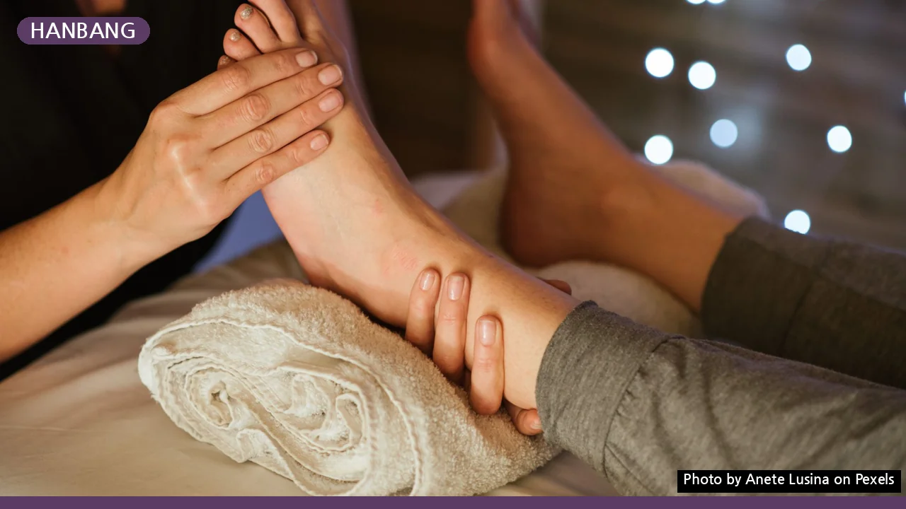
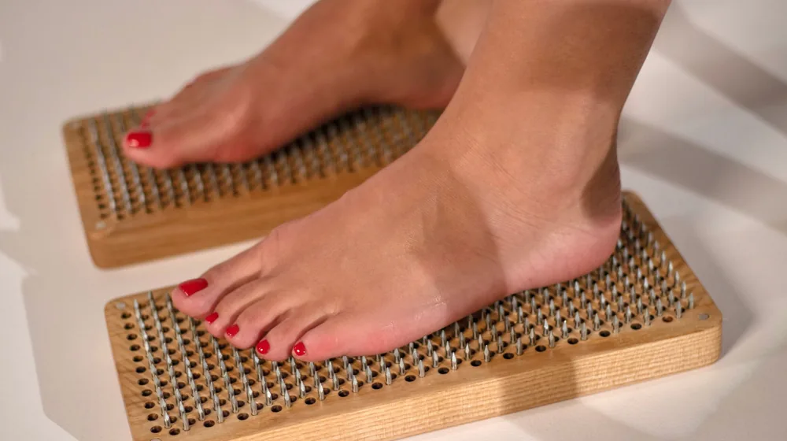

한방 족욕 예약, 초보자도 문제없는 완벽 가이드
사진: Anete Lusina / Pexels (무료 이미지, 출처 표기)
한방 족욕, 왜 이렇게 찾을까요?

일상의 피로와 스트레스는 우리 몸에 다양한 방식으로 나타납니다. 특히 차가운 손발, 혈액순환 저하, 불면증 같은 증상은 삶의 질을 크게 떨어뜨리곤 하는데요. 이때 한방 족욕은 따뜻한 물과 한방 약재의 기운으로 발을 따뜻하게 데워 혈액순환을 돕고 몸 전체의 기혈 순환을 개선하는 데 효과적입니다. 단순히 피로를 푸는 것을 넘어 몸의 균형을 찾아주는 전통적인 웰니스 방법으로 많은 분이 찾고 있습니다.
한방 족욕, 어디서 예약할 수 있나요?
한방 족욕은 개인의 목적과 선호도에 따라 다양한 곳에서 체험하고 예약할 수 있습니다. 크게 세 가지 유형으로 나누어 볼 수 있습니다.
- 한의원/한방병원: 전문 한의사의 진단 아래 체질에 맞는 한방 약재를 사용하며, 질병 치료나 만성적인 문제 개선을 목적으로 합니다. 비교적 전문적이고 체계적인 관리가 특징입니다.
- 한방 웰니스/스파: 심신의 안정과 휴식을 주 목적으로 하며, 아로마 오일, 마사지 등 다양한 추가 프로그램을 함께 제공합니다. 도심 속에서 편안하게 힐링할 수 있는 공간이 많습니다.
- 일반 족욕 카페/테마 공간: 비교적 가볍고 저렴한 가격으로 한방 족욕을 체험해 볼 수 있는 곳입니다. 접근성이 좋고 부담 없이 방문하기 좋습니다.
각 시설의 특징을 비교하여 자신에게 맞는 곳을 선택하는 것이 중요합니다. 2026년 09월 기준으로 시설별 제공 프로그램과 가격은 상이할 수 있으니, 방문 전 반드시 확인하는 것이 좋습니다.
예약 전 꼭 확인해야 할 필수 체크리스트
성공적인 한방 족욕 경험을 위해 예약 전 몇 가지 사항을 미리 확인하는 것이 좋습니다.
- 방문 목적 명확화: 단순한 피로 해소가 목표인지, 특정 건강 문제를 개선하고 싶은지 목적을 정하면 적합한 시설을 고르기 쉽습니다.
- 프로그램 구성: 족욕 시간(보통 20~40분), 사용되는 한방 약재 종류, 추가 서비스(발 마사지, 차 제공, 온열 팩 등)를 확인합니다.
- 가격 및 할인 정보: 기본 족욕 비용과 패키지 요금, 멤버십 할인, 첫 방문 할인, 이벤트 등 다양한 할인 혜택을 미리 확인하면 합리적인 이용이 가능합니다.
- 위치 및 접근성: 대중교통 이용 편의성, 주차 가능 여부 및 주차 요금을 확인하여 방문 시 불편함이 없도록 합니다.
- 운영 시간 및 휴무일: 방문하고자 하는 요일과 시간에 시설이 운영하는지, 정기 휴무일은 언제인지 확인합니다.
한방 족욕 예약, 단계별 따라하기
원하는 한방 족욕 시설을 찾았다면, 이제 예약을 진행할 차례입니다. 일반적인 예약 절차는 다음과 같습니다.
한방 족욕 이용 가격 및 팁: 이것만 알아도 이득!
한방 족욕 가격은 시설의 종류, 프로그램 구성, 이용 시간에 따라 크게 달라집니다. 2026년 09월 기준으로 살펴보면, 일반 족욕 카페는 1인당 1만원대부터 시작하는 경우가 많으며, 한방 웰니스/스파는 기본 족욕 2~3만원대부터 마사지나 추가 케어가 포함된 패키지는 5만원 이상으로 형성되어 있습니다. 한의원/한방병원의 경우 진료비와 함께 족욕 비용이 책정되어 더 높아질 수 있습니다.
더 합리적으로 이용하려면 몇 가지 팁을 활용해 보세요. 첫째, 패키지 또는 멤버십 구매를 고려하면 단품 이용보다 할인 혜택을 받을 수 있습니다. 둘째, 오픈 특가, 조조 할인, 평일 할인 등 특정 시간대나 요일에 적용되는 프로모션을 확인합니다. 셋째, 제휴 카드 할인이나 지역 화폐 사용 가능 여부도 미리 알아보면 좋습니다. 방문 전 공식 홈페이지를 통해 최신 가격 정보를 확인하고 문의하는 것이 가장 정확합니다.
효과를 높이는 추가 팁 및 주의사항
한방 족욕의 효과를 극대화하고 안전하게 즐기기 위한 몇 가지 팁과 주의사항을 안내합니다.
- 족욕 전후 수분 섭취: 족욕 중 땀 배출로 인한 탈수를 막기 위해 따뜻한 물이나 한방차를 미리 마시고, 족욕 후에도 충분히 수분을 보충해 주세요.
- 충분한 휴식: 족욕 후에는 몸이 이완된 상태이므로, 바로 격렬한 활동보다는 편안하게 휴식을 취하는 것이 좋습니다.
- 보습 관리: 족욕 후에는 발이 건조해질 수 있으니, 보습 크림을 바르거나 오일 마사지를 해주면 더욱 좋습니다.
- 임산부 및 특정 질환자 주의: 임산부, 고혈압 환자, 당뇨병 환자, 심혈관 질환자 등은 족욕 전에 반드시 전문의 또는 해당 시설 전문가와 상담하여 안전하게 이용할 수 있는지 확인해야 합니다.
- 몸에 이상이 느껴지면 중단: 족욕 중 어지럼증, 메스꺼움 등 불편함이 느껴지면 즉시 중단하고 휴식을 취해야 합니다.
이 글에서 안내하는 내용은 일반적인 정보이며, 개별 시설의 정책이나 개인의 건강 상태에 따라 다를 수 있습니다. 정확한 사항은 이용하고자 하는 시설의 공식 홈페이지나 직접 문의하여 다시 확인하시길 권장합니다.
🔗 이 글도 함께 보면 좋아요: 한방 족욕·입욕 웰니스, 후회 없이 고르는 3가지 핵심 기준
관련 추천 상품
이 포스팅은 쿠팡 파트너스 활동의 일환으로, 이에 따른 일정액의 수수료를 제공받습니다.